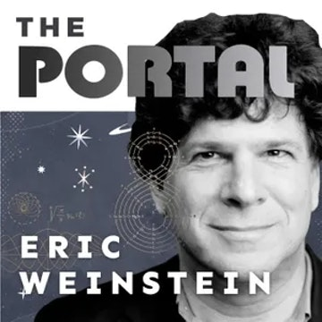

The Portal
The Portal is an exploration into discovery, including conversations with thought leaders. Host Eric Weinstein, Managing Director of Thiel Capital, brings his unique expertise and diverse roster of guests for a wide range of discussions, including science, culture, business, and capitalism. The show will feature people whose lives demonstrate that portals into what we would normally consider impossible, are indeed possible. Guests include presidential candidate Andrew Yang, NY Times bestselling author Sam Harris, and retired Navy Seal and creator of the hit business podcast Jocko Willink.
40: Introducing The Portal Essay Club - What if everyone is simply insane?
39: Admission To Sugar Baby U.
38: Mass Media, Markets, and Human Malware: A Portal Q&A
37: Andrew Marantz - Surfing the Wake of The Woke
36: Dark Matter, Black Matters and All That Jazz
35: Balaji Srinivasan - The Heretic & The Virus